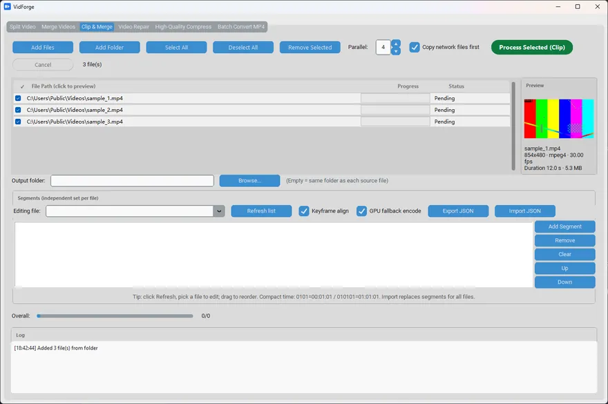

تسعة مقاطع إلى MP4 في خمس ثوانٍ — دون فتح تسعة مربعات حوار.
معظم تطبيقات الفيديو مبنية حول مقطع واحد في كل مرة: اختر ملفًا، واختر إعدادًا مسبقًا، واختر اسم إخراج، وانتظر، وكرّر. أما VidForge فمبني حول المجلد. أفلِت دفعة كاملة، وحدّد مجلد الإخراج مرة واحدة، فيقرر لكل ملف ما يحتاج عملًا فعلًا — نسخ التدفق حين يناسب الترميز أصلًا، وإعادة ترميز حقيقية فقط حين لا يناسب — بينما أربعة ملفات تعمل بالتوازي خلف شريط تقدم واحد.
تحويل، إصلاح، ضغط، قص، دمج، تقسيم. القواعد نفسها، الطابور نفسه، السجل نفسه.
تجربة مجانية 7 أيام بكل الأدوات مفتوحة — ثم 2.99 دولار مرة واحدة. بلا حساب، بلا علامة مائية، بلا سقف رفع، والفيديوهات لا تغادر حاسوبك أبدًا. صُمّم لمن يعالج المجلدات: لقطات الهواتف وكاميرات الحركة، تسجيلات الشاشة، التنزيلات غير المكتملة، والبث الطويل الذي يحتاج قصًا إلى فصول.

تطبيقات المونتاج تحسّن مقطعًا واحدًا. الدفعات مشكلة مختلفة
الدفعة ليست «المهمة نفسها مكررة». إنها طابور من مدخلات مختلطة: بعض الملفات H.264 أصلًا، وبعضها HEVC من هاتف، وأحدها حاوية بطرف تالف، وثلاثة تحتاج دمجًا، وكلها يجب أن تنتهي في المجلد نفسه بأسماء معقولة. تسليم ذلك لمحرّر خط زمني يعني القسم الممل — إدارة الملفات — يدويًا، مربع حوار في كل مرة.
🗂 ضريبة مربعات الحوار لكل ملف
صدّر مجلدًا من 20 مقطعًا من محرّر تقليدي فستؤكد الإعداد المسبق نفسه ومعدل البت نفسه ومجلد الإخراج نفسه عشرين مرة. يطرح VidForge السؤال مرة واحدة لكل الطابور.
⏳ إعادة ترميز ما لم يكن بحاجة إليها
نصف الدفعة النموذجية في الصيغة الهدف أصلًا. يفحص VidForge الترميز أولًا ويقوم ينسخ التدفق بتلك الملفات — مقطع 45 ثانية يصل في أقل من ثانية، مطابقًا بتًا ببت.
🧊 الانتظار على نواة واحدة
تصدير واحد في كل مرة يترك الجهاز بلا عمل. يشغّل الطابور من 1 إلى 8 عمّال بالتوازي مع تقدم لكل ملف وحالة لكل ملف وزر إلغاء مشترك واحد.
ماذا يعني «قائم على القواعد» فعلًا
كل تبويب مجموعة قواعد لا معالج: أي ملفات، وماذا نفعل بكل واحد، وإلى أين يذهب النتيجة، وماذا نفعل حين لا يكون المدخل مثاليًا. لا يُقرر شيء بصمت — يطبع السجل القرار المتخذ لكل ملف على حدة.
| المهمة | القاعدة التي يطبّقها VidForge |
|---|---|
| تحويل | H.264 داخل حاوية متوافقة مع MP4 → نسخ تدفق. HEVC أو غيره → إعادة ترميز ذلك الملف فقط. صوت لا يُفك ترميزه → إعادة محاولة بالفيديو فقط بدل إفشال الدفعة. |
| ضغط | تقدير البتات لكل بكسل من الدقة ومعدل الإطارات. إذا كانت هامش التحسين أقل من ~10% يقوم تجاوزه — فإعادة الترميز ستكلف وقتًا وجودة فقط. |
| دمج | مقارنة الترميز والدقة ومعدل الإطارات (±0.01) وصيغة البكسل. تطابق → وصل دون فقدان. عدم تطابق → إعادة ترميز ليبقى الاتصال يعمل. |
| قص | استخراج كل مقطع بنسخ تدفق، مع الرجوع إلى إعادة الترميز لكل مقطع، ثم الوصل — وإعادة ترميز كاملة فقط إذا فشل مسار النسخ كليًا. |
| إصلاح | إعادة بناء فهرس الحاوية بنسخ التدفق. إعادة الترميز فقط حين تكون الطوابع الزمنية بلا أمل. |
| تقسيم | أجزاء متساوية بالعدد؛ إما قص دقيق مع إعادة ترميز أو نسخ سريع عبر الإطارات المفتاحية إلى مجلد فرعي لكل فيديو — دون الكتابة فوق المصدر أبدًا. |
المزايا الرئيسية
ست أدوات، مع ماكينة الطابور التي تجعلها قابلة للاستخدام على مجلد لا على ملف.
⇄ تحويل جماعي إلى MP4
أضف ملفات أو مجلدًا كاملًا، واختر مجلد إخراج مرة واحدة، وحوّل الطابور بنسخ ذكي / إعادة ترميز. لقطات الهواتف HEVC تصبح H.264 قابلة للتشغيل في كل مكان دون لمس المقاطع التي كانت سليمة أصلًا.
🛠 إصلاح الفيديو
أطعمه متبقي تنزيل مقطوع — .!qb, .part, .bc!, .xltd, .emule.td — وتستعيد MP4 قابلاً للتشغيل. مقطع 45 ثانية يُصلح في نحو ثانية، بنسخ التدفق.
🗜 ضغط عالي الجودة
ضغط مراعٍ للجودة مع تقدير البتات لكل بكسل، فيتجاوز المقاطع التي لا يمكن تقليصها بدل إتلافها. تحكم يدوي في الحجم ومعدل البت وCRF وNVENC CQ — مع ملخص للدفعة في النهاية.
✂ القص والدمج
مجموعات مقاطع مستقلة لعدة ملفات في وقت واحد، وإدخال وقت مختصر (0101 = 00:01:01)، وإعادة ترتيب بالسحب، ومحاذاة إطارات مفتاحية، وبدائل GPU، واستيراد / تصدير JSON لتصبح القصة المتكررة إعدادًا مسبقًا قابلًا لإعادة الاستخدام.
⇉ دمج الفيديوهات
اجمع التسجيلات في ملف واحد بالترتيب الذي تحدده، مع عدد التكرار واسم إخراج مخصص وحاوية mp4 / mkv / mov وHEVC للمعالج اختياريًا وبقاء كل تدفقات الصوت والترجمة عند النسخ.
⧉ تقسيم الفيديو
تقسيم بعدد الأجزاء مع إعدادات مسبقة، وقص دقيق اختياري، ومجلدات فرعية تلقائية <name>_split ليُقطع التسجيل الطويل إلى فصول دون تعارض.
⚡ عمّال متوازيون
من 1 إلى 8 ملفات في الوقت نفسه خلف طابور واحد وشريط تقدم واحد. حالة لكل ملف (في الانتظار / قيد التحويل / تم / مُتجاوز) وزر إلغاء واحد يوقف الدفعة كلها بأمان.
🧠 الوضع الذكي
النسخ عند الإمكان، وإعادة الترميز عند الحاجة فقط، واختيار الترميز المناسب للهدف، والاحتفاظ بالأصل حين لا يحقق ضغطٌ أي مكسب.
🔒 دون اتصال وخصوصية كاملة
FFmpeg مدمج، بلا تتبع، بلا اتصالات شبكة، بلا حساب. تبقى السجلات في %LOCALAPPDATA%. راجع سياسة الخصوصية.
شاهده وهو يعمل
جلسة واحدة غير مكتوبة: تسعة مقاطع مختلطة تحولت، وأربعة ملفات ضُغطت، وثلاثة مقاطع دُمجت، وتنزيل تالف أُصلح. ساعة السجل حقيقية — بلا تسريع، فقط اختُصرت فترات التوقف بين الخطوات.
تسعة ملفات، أربعة في كل مرة
تُنسخ مقاطع H.264 بالتدفق، ويُعاد ترميز مقطع HEVC الوحيد، ويفرغ الطابور في نحو خمس ثوانٍ.
ضغط يعرف متى يتوقف
أربعة مقاطع دخلًا، 2.86 ميجابايت → 1.85 ميجابايت — والملخص يخبرك بالتوفير الدقيق لكل ملف.
تنزيل تالف، تم إصلاحه
متبقي <code>.mp4.!qb</code> يصبح MP4 قابلاً للتشغيل بنسخ التدفق — اللقطات السليمة لا تُعاد ترميزها أبدًا.
كيف يعمل
أربع خطوات، ولا تتغير إلا أولاهما في كل دفعة.
تعليمات خطوة بخطوة
كل تبويب بالترتيب الذي ستستخدمه به، من مجلد فوضوي إلى ملفات جاهزة.

<name>_split خاص به.

00:10–00:25 أو الصيغة المختصرة 0101. أعد الترتيب بالسحب، واحفظ المحاذاة على الإطارات المفتاحية للسرعة، وصدّر القائمة كلها كـ JSON لإعادة استخدامها في الدفعة التالية.

.!qb / .part / .bc! واضغط إصلاح المحدد. يتحول الحالة إلى تم الإصلاح (نسخ تدفق)؛ ويؤكد السجل مسار الإخراج وحجمه. استخدم نسخ ملفات الشبكة أولاً إذا كان المصدر على NAS.حالات استخدام واقعية
حيث يوفر المعالجة الجماعية ظهيرة كاملة، لا دقيقة.
📱 لقطات الهواتف وكاميرات الحركة
تسجل آيفونات ورؤوس أندرويد الحديثة بترميز HEVC. مجلد مقاطع العطلة يصبح مجلد MP4 بترميز H.264 يعمل في كل مكان — التلفاز ووحدة السيارة ومحرّر قديم — وتمر ملفات H.264 القائمة دون تغيير.
🧲 التنزيلات غير المكتملة
يترك qBittorrent ملفات <code>.!qb</code> ويترك eMule ملفات <code>.part</code> ويترك المتصفحات أشقّاء <code>.crdownload</code>. إذا كان الفيديو نفسه شبه مكتمل، فذلك المتبقي قابل للاستعادة — يعيد التطبيق بناء الفهرس وتحتفظ باللقطات.
🎥 تسجيلات الشاشة والبث
ينتج OBS وأدوات الالتقاط ملفات 2–4 غيغابايت تحتاج قصًا إلى فصول. قسّم بالأجزاء، أو اقتص المقاطع المهمة من عشرات التسجيلات في تمريرة واحدة بإعداد JSON مسبق.
🗄 ضغط الأرشيف
تحتوي مكتبات MP4 الكبيرة عادة على 20–40% معدل بت مهدور. يضغط تقدير bpp ما له هامش، ويتجاوز ما لا، ويطبع ملخصًا «وفّرنا 35%» لتعرف أنها ساوت الكهرباء.
🎬 تسجيلات متعددة الأجزاء
الكاميرات التي تتوقف عند 4 غيغابايت أو التسجيلات الموزعة على جلسات تُعاد إلى ملف واحد دون إعادة ترميز حين تتطابق المعاملات — جودة الأصل، وملف واحد في الإخراج.
🏫 مواد الدورات والاجتماعات
فصل دراسي كامل من تسجيلات المحاضرات: اضغط الثقيلة، وادمج الجلسات من جزأين، وقسّم ثلاث الساعات حسب الموضوع، وابقَ أسماء الإخراج قابلة للتنبؤ.
الأسئلة الشائعة
هل VidForge مجاني؟
طوال الأيام السبعة الأولى، نعم — تتضمن بطاقة متجر مايكروسوفت تجربة مجانية 7 أيام بكل الأدوات مفتوحة. بعدها يكون الدفع 2.99 دولار مرة واحدة: بلا اشتراك، وبلا حساب، وبلا علامة مائية، وبلا سقف رفع.
هل يرفع فيديوهاتي إلى مكان ما؟
لا. تجري المعالجة كلها على نسخة FFmpeg مدمجة داخل التطبيق، على جهازك. لا تتبع ولا وصول شبكة إطلاقًا — راجع سياسة الخصوصية.
لماذا التحويل الجماعي بهذه السرعة؟
لأن معظم العمل يُتجاوز. الملفات الموجودة أصلًا في تدفق متوافق مع MP4 تُنسخ بالتدفق — بلا فك ترميز ولا ترميز ولا تغيير جودة — وتُعاد ترميز التحويلات الحقيقية فقط، بالتوازي. تسعة مقاطع مختلطة انتهت في نحو خمس ثوانٍ في العرض أعلاه.
هل سيكتب فوق أصولي أو يعدّلها؟
أبدًا. تُكتب النتائج في مجلد الإخراج الذي تختاره؛ وإن تركته فارغًا تُكتب كل نتيجة بجوار مصدرها، والتقسيم ينشئ دائمًا مجلدًا فرعيًا لكل فيديو. ملفات المصدر تُقرأ فقط.
هل يمكنه إصلاح فيديو نُصف تنزيله؟
غالبًا نعم — ما دامت البايتات المنزلة تحتوي تدفقًا قابلًا للقراءة. يعيد VidForge بناء فهرس الحاوية بنسخ التدفق، مع الرجوع لإعادة الترميز إذا كانت الطوابع الزمنية بلا أمل. لا يستطيع استرداد إلا ما نُزل فعلًا: ملف توقف عند 30% سيشغل نحو 30% من مدته.
هل يعيد الدمج الترميز ويفقد الجودة؟
فقط حين تختلف المدخلات. يقارن VidForge الترميز والدقة ومعدل الإطارات (بتسامح ±0.01) وصيغة البكسل؛ إذا تطابقت وُصلت الملفات كما هي، فيكون الإخراج الفيديو نفسه بتًا ببت. وتُعاد ترميز المدخلات المختلفة ليبقى الناتج قابلاً للتشغيل.
هل أحتاج لتثبيت FFmpeg؟
لا. يأتي FFmpeg وffprobe داخل التطبيق. لا يُضاف شيء إلى PATH ولا يُنزَّل شيء أثناء التشغيل.
هل يدعم HEVC / H.265 وNVENC؟
نعم. في الوضع الذكي يُنسخ H.264 ويُعاد ترميز HEVC إلى H.264 للتوافق. يُكتشف NVENC العتادي تلقائيًا للضغط وترميزات الاحتياط، ويتاح x265 للمعالج خيارًا.
هل أستطيع تشغيله على حاسوب محمول بلا كرت رسوميات مستقل؟
نعم. الترميز العتادي اختياري — يرجع التطبيق إلى libx264 / libx265. لا تحتاج نسخة التدفق والإصلاح أي مُرمّز أصلًا فتعمل بسرعة كاملة على الرسوميات المدمجة.
ما متطلبات النظام؟
ويندوز 10 أو ويندوز 11 بنظام 64 بت. نحو 200 ميجابايت من القرص للتطبيق ونسخة FFmpeg المدمجة. لا يلزم كرت رسوميات؛ كرت NVIDIA مستقل يجعل الضغط أسرع فحسب.
كيف أحصل على المساعدة؟
راسلنا على 30329277@qq.com مع إصدار التطبيق وإن أمكن آخر أسطر من لوحة السجل. وقت الاستجابة المعتاد من 24 إلى 48 ساعة.
متطلبات النظام
| النظام | ويندوز 10 / ويندوز 11 بنظام 64 بت |
| القرص | نحو 200 ميجابايت للتطبيق ونسخة FFmpeg المدمجة، مع مساحة لمخرجاتك |
| كرت الرسوميات | اختياري. يُستخدم NVENC إن وُجد؛ وإلا x264 / x265 على المعالج |
| الشبكة | غير مطلوب إطلاقًا — إلا إذا كانت ملفاتك المصدرية على NAS (استخدم <i>نسخ ملفات الشبكة أولاً</i>) |
| المدخلات | MP4 وMOV وMKV وAVI وكل ما يستطيع FFmpeg المدمج فك ترميزه — التنزيلات الجزئية مشمولة |
احصل على التطبيق
VidForge متاح الآن على متجر مايكروسوفت لويندوز 10 و11 (64 بت). التجربة المجانية 7 أيام هي التطبيق الكامل — كل الأدوات مفتوحة، بلا علامة مائية، بلا حدود — وبعدها تحتفظ به بشراء 2.99 دولار لمرة واحدة، بلا اشتراك. تُظهر البطاقة لقطات الشاشة ومتطلبات النظام والسعر بعملتك؛ وسياسة الخصوصية منشورة هنا على هذا الموقع.
ويندوز 10 / 11 · 64 بت تجربة مجانية 7 أيام 2.99 دولار مرة واحدة FFmpeg مدمج بلا حساب